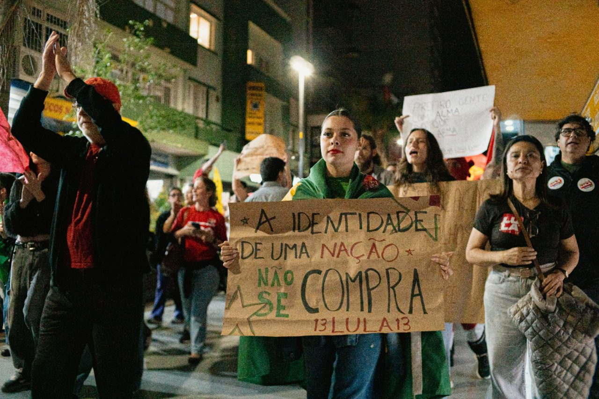

DİJİTAL SAVAŞIN YENİ CEPHESİ: "LULA’NIN ORDUSU" BREZİLYA SEÇİMLERİNİN KADERİNİ NASIL DEĞİŞTİRDİ?
Brezilya siyasi tarihinin en çekişmeli seçim maratonlarından birinde sanal dünyanın gücü sandık sonuçlarını doğrudan etkiledi. Yıllardır aşırı sağın ve rakip kanadın hakimiyetinde olan sosyal medya alanı, Luiz Inácio Lula da Silva cephesinin kurduğu agresif ve doğrudan dijital ağ ile adeta baştan aşağı yeniden şekillendi. Bu mobilizasyonun merkezinde ise 10 milyonu aşkın kullanıcıya ulaşan ve kısa sürede "Lula’nın Ordusu" (Lula's Army) olarak adlandırılan devasa WhatsApp kanalları yer aldı.

Brezilya siyasi tarihinin en çekişmeli seçim maratonlarından birinde sanal dünyanın gücü sandık sonuçlarını doğrudan etkiledi. Yıllardır aşırı sağın ve rakip kanadın hakimiyetinde olan sosyal medya alanı, Luiz Inácio Lula da Silva cephesinin kurduğu agresif ve doğrudan dijital ağ ile adeta baştan aşağı yeniden şekillendi. Bu mobilizasyonun merkezinde ise 10 milyonu aşkın kullanıcıya ulaşan ve kısa sürede "Lula’nın Ordusu" (Lula's Army) olarak adlandırılan devasa WhatsApp kanalları yer aldı.
Farklı uluslararası ajansların, siyasi analistlerin ve saha verilerinin derlenmesiyle hazırlanan bağımsız analiz metni şu şekildedir:
İlk Tur Şoku ve Dijital Oyun Planının Değişmesi
Seçimlerin ilk turunda beklenen net başarının yakalanamaması, sol ittifak bünyesinde ciddi bir strateji değişimini zorunlu kıldı. Geleneksel medya kampanyalarının, televizyon reklamlarının ve klasik saha mitinglerinin dijital çağın hızına yetişemediği netleşince, doğrudan seçmenin cebindeki akıllı telefonlara ulaşacak hızlı bir mekanizma hayata geçirildi.
Sol kanat milletvekillerinden André Janones liderliğinde kurulan WhatsApp ağı, pasif bilgilendirme kanalı olmaktan çıkıp etkileşimli bir "dijital seferberlik merkezine" dönüştürüldü. Sağ siyasetin yıllardır etkili biçimde kullandığı sert, anlık, yüksek tempolu ve doğrudan mesajlaşma üslubu bu kez sol ittifak tarafından benimsendi.
Dezenformasyonla Mücadele ve Anlık Mobilizasyon
Brezilya’daki seçim süreçlerinde en çok tartışılan konulardan biri, kapalı mesajlaşma gruplarında yayılan dezenformasyon ve manipülatif içerikler olmuştu. WhatsApp ve Telegram gibi uçtan uca şifreli platformlar, siyasi algı operasyonlarının ana üssü haline gelmişti.
"Lula’nın Ordusu" adı verilen kanal ağı bu noktada iki kritik görev üstlendi:
Doğrulama ve Savunma: Rakip kanat tarafından yayılan iddialar ve yapay içerikler, kanal üzerinden dakikalar içinde tespit edilerek milyonlarca gönüllüye doğru bilgi ve grafiklerle ulaştırıldı.
Aktif Yayılım (Karşı Taarruz): Gönüllülere sadece mesaj okunması değil, hazırlanan içeriklerin kendi kişisel aile ve mahalle gruplarında paylaşılması yönünde anlık çağrılar yapıldı. Bu sayede organik bir bilgi ağı oluşturuldu.
Sandığa Gitmeyen Seçmeni Oy Kullanmaya İkna Etti
Uluslararası ilişkiler ve siyaset bilimi uzmanlarına göre, iki tur arasındaki en belirgin fark sandık katılım oranında yaşandı. İlk turda sandığa gitmeyen veya kararsız kalan milyonlarca seçmenin ikinci turda sandık başına çekilmesinde bu doğrudan mesajlaşma stratejisi kilit rol oynadı.
Geleneksel medya algoritmalarının aksine, doğrudan WhatsApp mesajlarıyla kurulan bu birebir temas; kararsız seçmenlerde güven duygusunu artırdı ve seçimin kaderini belirleyen kritik oy farkının yakalanmasını sağladı.
Sonuç: Siyasi İletişimde Yeni Dönem
Brezilya seçimleri, modern siyasette kapalı mesajlaşma uygulamalarının sadece bir haberleşme aracı değil, aynı zamanda seçim kazandıran stratejik birer "dijital karargah" haline geldiğini kanıtladı. Lula cephesinin kurduğu bu organizasyon, küresel ölçekte dijital kampanya yönetimi ve sosyal medya platformlarının siyasi süreçlerdeki etkisi açısından yeni bir inceleme konusu olarak öne çıkıyor.